Overview
Objek Penelitian
Website yang dievaluasi dalam studi kasus ini adalah website resmi SMKN 21 Jakarta. Pengujian dilakukan terhadap versi website yang aktif pada saat penelitian (November 2026).
Catatan: Terdapat juga domain alternatif smkn21jakarta.id yang dikaitkan dengan sekolah ini. Domain utama yang digunakan saat pengujian adalah smkn21jakarta.sch.id.
Masalah
Website SMKN 21 Jakarta seharusnya memudahkan siswa dan orang tua dalam mencari informasi. Namun, kenyataannya pengguna justru sering tersesat karena posisi menu tidak sesuai ekspektasi dan beberapa tautan tidak terlihat bisa diklik.
Sebagai contoh, saat mencari dokumentasi P5 tahun lalu atau informasi prestasi siswa, pengguna harus membuka banyak halaman dan sering berakhir kebingungan. Di sisi lain, penggunaan istilah asing seperti "Job Fair" dan "Tracer Study" serta tidak adanya tombol "Beranda" yang jelas membuat navigasi terasa menyulitkan.
Karena waktu pengguna habis hanya untuk menebak struktur menu, evaluasi usability ini dilakukan untuk menemukan akar masalahnya dan merancang perbaikan yang paling berdampak.
Alur Pengerjaan
- Pengujian pertama: menganalisis card sorting bawaan website, mengisi formulir SEQ, wawancara, menghitung hasil SEQ, lalu membuat laporan.
- Desain: membuat mockup, wireframe, wireflow, userflow, dan prototype.
- Perbaikan: 7 perbaikan, menyusun ulang Card Sorting, menguji ulang (Formulir, Wawancara, Perhitungan, Laporan).
- Pengujian ulang: card sorting, SEQ, wawancara, perhitungan, laporan. Hasilnya semua perbaikan lolos.
Metodologi & Prosedur Pengujian
Pendekatan Penelitian
Evaluasi usability ini menggunakan mixed-methods (kuantitatif + kualitatif) untuk mendapatkan gambaran menyeluruh tentang pengalaman pengguna website SMKN 21 Jakarta. Data kuantitatif diambil dari SEQ (Single Ease Question), sedangkan data kualitatif digali melalui wawancara semi-terstruktur dan card sorting.
Setting & Prosedur
| Aspek | Detail |
|---|---|
| Lokasi | SMKN 1 Cipeundeuy (tatap muka) |
| Perangkat | Laptop/PC dengan browser Chrome (default) |
| Moderator | 1 orang (Rizki Ramdani) — tanpa asisten |
| Durasi per sesi | ±5–10 menit per peserta |
| Perekaman | Video wawancara (YouTube), screenshot layar, catatan moderator |
Task List (15 Tugas yang Diuji)
Setiap peserta diminta menyelesaikan 15 tugas berikut pada website, lalu menilai tingkat kemudahan setiap tugas dengan SEQ (1–7):
| No | Tugas | Target Halaman/Elemen |
|---|---|---|
| 1 | Menemukan profil/sejarah sekolah | Profil |
| 2 | Menemukan kurikulum sistem pembelajaran sekolah | Berita |
| 3 | Menemukan informasi P5 | Kurikulum → P5 |
| 4 | Menemukan informasi TEFA (Teaching Factory) | Kurikulum → TEFA |
| 5 | Menemukan informasi ekstrakurikuler | Kesiswaan → Ekstrakurikuler |
| 6 | Menemukan informasi Prestasi siswa | Kesiswaan → Prestasi |
| 7 | Menemukan informasi SPMB | Kesiswaan → SPMB |
| 8 | Menemukan halaman Sapras | Menu Sapras |
| 9 | Menemukan informasi Job Fair / Bursa Kerja | Hubin/Humas → Job Fair |
| 10 | Menemukan informasi Tracer Study / Data Alumni | Hubin/Humas → Tracer Study |
| 11 | Menemukan kontak sekolah | Kontak |
| 12 | Menemukan galeri/foto kegiatan | Adiwiyata |
| 13 | Membuka menu Kesiswaan (klik) | Menu Kesiswaan |
| 14 | Menemukan arsip P5 tahun 2024–2025 | Kurikulum → P5 → Arsip |
| 15 | Kembali ke Beranda | Tombol Beranda / Logo |
Catatan: Tugas yang ditebalkan adalah tugas dengan skor SEQ terendah pada Pengujian 1 dan menjadi dasar 7 perbaikan.
Cara Skoring SEQ & Kriteria Keberhasilan
SEQ menggunakan skala 1–7 (1 = sangat sulit, 7 = sangat mudah). Skor rata-rata dihitung per tugas (dari seluruh peserta) dan per peserta (dari seluruh tugas). Nilai rata-rata keseluruhan diperoleh dari rata-rata seluruh skor. Interpretasi: skor mendekati 7 menunjukkan tugas semakin mudah; skor di bawah 5 mengindikasikan masalah usability yang perlu diperbaiki.
Kriteria keberhasilan pengujian ulang:
- Rata-rata SEQ keseluruhan ≥ 6,0 setelah perbaikan.
- Tidak ada tugas dengan rata-rata SEQ < 5,0.
- Peserta menyatakan (melalui wawancara) bahwa menu dan istilah lebih mudah dipahami.
Pengujian Pertama
Apa yang Diteliti pada Pengujian Pertama
Pengujian pertama bertujuan untuk mengukur kondisi awal (baseline) usability website SMKN 21 Jakarta sebelum dilakukan perbaikan apa pun. Dengan kata lain, tahap ini menjawab pertanyaan: “Seberapa mudah website yang sekarang digunakan, dan di mana letak kesulitannya?”
Aspek yang diteliti pada pengujian pertama meliputi:
- Struktur informasi (information architecture): bagaimana menu dan kategori bawaan website tersusun, serta apakah susunan tersebut sesuai dengan cara pengguna mencari informasi.
- Kemudahan menemukan informasi (findability): apakah pengguna dapat menemukan halaman penting seperti P5, Prestasi, Job Fair, dan Tracer Study tanpa kebingungan.
- Kejelasan label dan istilah menu: apakah istilah yang digunakan (termasuk istilah berbahasa Inggris) dipahami oleh pengguna.
- Kejelasan navigasi dan elemen interaktif: apakah menu terlihat bisa diklik, dan apakah pengguna tahu cara kembali ke halaman utama.
- Tingkat kesulitan tugas (task difficulty): diukur dengan SEQ (Single Ease Question) skala 1–7 setelah pengguna menyelesaikan tugas.
- Pengalaman dan keluhan pengguna: digali melalui wawancara setelah pengujian untuk mendapatkan alasan di balik kesulitan yang dialami.
Gambaran Keseluruhan Pengujian Pertama
Pengujian pertama dilakukan dalam satu rangkaian yang saling melengkapi, sehingga data kuantitatif (skor) dan data kualitatif (alasan pengguna) bisa dibandingkan:
- Card Sorting 1: memetakan struktur menu bawaan website asli — kategori apa saja yang ada dan kartu/isi apa yang berada di dalamnya. Hasilnya menjadi gambaran awal bagaimana informasi dikelompokkan oleh pembuat website.
- Formulir SEQ: peserta diminta menyelesaikan tugas-tugas tertentu (misalnya mencari informasi P5, Prestasi, dan Job Fair), lalu menilai seberapa mudah tugas tersebut dengan skala 1 (sangat sulit) sampai 7 (sangat mudah).
- Wawancara: setelah mengisi SEQ, peserta diwawancarai untuk menggali bagian mana yang membingungkan, penyebab kesulitan, dan saran perbaikan menurut mereka.
- Perhitungan SEQ: skor dari seluruh peserta diolah untuk mendapatkan nilai rata-rata, sehingga tingkat kesulitan website bisa diukur secara angka dan menjadi pembanding pada pengujian ulang.
- Laporan Pengujian 1: seluruh temuan dirangkum menjadi daftar masalah (TC-3, TC-6, TC-9, TC-10, TC-13, TC-14, TC-15) yang kemudian menjadi dasar 7 perbaikan pada tahap desain dan pengujian ulang.
Hasil akhir pengujian pertama menunjukkan bahwa website asli masih menyulitkan pengguna dalam menemukan informasi tertentu, terutama karena struktur menu yang tidak sesuai ekspektasi, istilah asing yang membingungkan, dan elemen navigasi yang kurang jelas. Temuan inilah yang menjadi titik awal seluruh proses perbaikan pada case study ini.
Card Sorting 1 — Bawaan Website Asli
Card sorting pertama diambil dari struktur bawaan website asli SMKN 21 Jakarta, yaitu menu dan kategori yang memang sudah ada di website tersebut. Tujuannya untuk melihat struktur konten yang berjalan saat ini.
| Kategori (Menu Website Asli) | Kartu / Isi Website | Catatan |
|---|---|---|
| KURIKULUM | P5 (di dalamnya ada P5 2024-2025), TEFA (Teaching Factory) | Struktur bawaan website |
| KESISWAAN | Ekstrakurikuler, Prestasi, SPMB | Struktur bawaan website |
| HUBIN / HUMAS | Job Fair, Tracer Study | Struktur bawaan website |
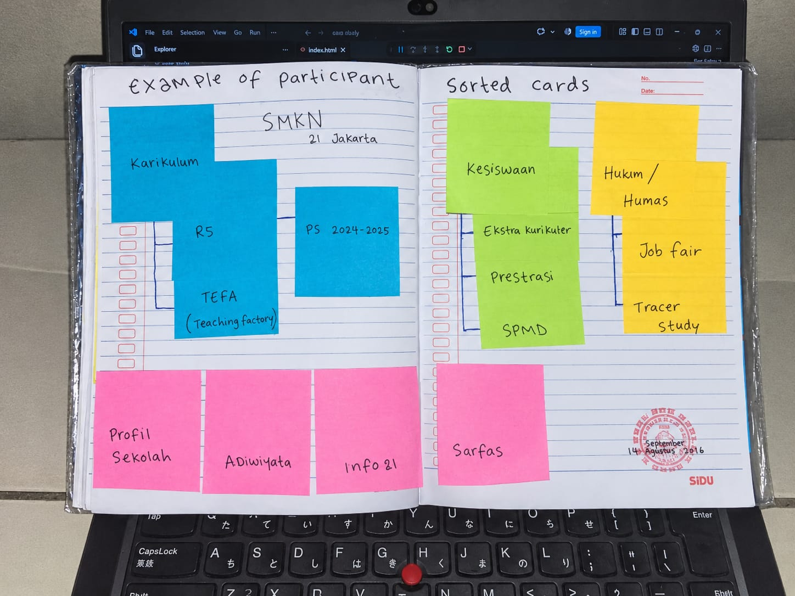
Formulir Pengujian SEQ
SEQ (Single Ease Question) menanyakan seberapa mudah tugas dilakukan, dengan skala 1 (sangat sulit) sampai 7 (sangat mudah).
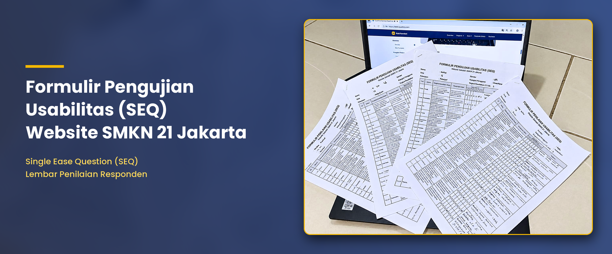
Rekap Nilai SEQ per User (Pengujian 1)
Berikut data peserta (Abdul Manaf, Nopal, Gustian Maulana, Moch Nazrul, M. Zaki Fadli) beserta nilai SEQ dari tugas 1 sampai 15 untuk masing-masing tugas pada website asli.
| NO | Responden/User | 1 | 2 | 3 | 4 | 5 | 6 | 7 | 8 | 9 | 10 | 11 | 12 | 13 | 14 | 15 | Rata-rata |
|---|---|---|---|---|---|---|---|---|---|---|---|---|---|---|---|---|---|
| 1 | Abdul Manaf | 6 | 6 | 5 | 5 | 5 | 4 | 5 | 5 | 3 | 1 | 7 | 6 | 5 | 7 | 2 | 5 |
| 2 | Nopal | 6 | 6 | 6 | 6 | 6 | 5 | 6 | 7 | 5 | 6 | 7 | 7 | 4 | 5 | 7 | 6 |
| 3 | Gustian Maulana | 7 | 6 | 6 | 6 | 6 | 4 | 6 | 7 | 6 | 6 | 6 | 6 | 7 | 5 | 7 | 6 |
| 4 | Moch Nazrul | 6 | 7 | 5 | 6 | 6 | 5 | 5 | 7 | 7 | 5 | 5 | 4 | 7 | 4 | 7 | 6 |
| 5 | M. Zaki Fadli | 5 | 6 | 5 | 7 | 5 | 5 | 7 | 7 | 4 | 5 | 5 | 6 | 4 | 4 | 2 | 5 |
| Rata-rata Skenario | 6 | 6,2 | 5,4 | 6 | 5,6 | 4,6 | 6,2 | 6,6 | 4,6 | 4,6 | 5,8 | 6,4 | 4,8 | 5 | 5 | 5,5 |
Rata-rata keseluruhan SEQ Pengujian 1 adalah 5,5 dari skala 1–7. Meskipun terlihat cukup tinggi secara keseluruhan, terdapat beberapa skenario yang nilainya cukup rendah, seperti tugas ke-6 (rata-rata 4,6), ke-9 (rata-rata 4,6), ke-10 (rata-rata 4,6), ke-13 (rata-rata 4,8), dan ke-14 (rata-rata 5). Ini sejalan dengan temuan bahwa pengguna masih kesulitan pada bagian tertentu.
Wawancara
Setelah mengerjakan tugas, setiap peserta diwawancarai untuk mencari hal yang perlu diperbaiki.
- Bagian mana yang paling membingungkan?
- Apa yang membuat tugas tadi terasa sulit?
- Apa saran kamu agar website lebih enak digunakan?
Ringkasan jawaban peserta pengujian 1:
- Kebingungan utama: pengguna kesulitan menemukan informasi P5 dan Prestasi karena posisi menu tidak sesuai dugaan mereka.
- Penyebab kesulitan: istilah berbahasa Inggris ("Job Fair", "Tracer Study") tidak dipahami, dan menu Kesiswaan tidak terlihat bisa diklik.
- Saran pengguna: gunakan istilah berbahasa Indonesia yang umum, tambahkan tombol "Beranda", buat menu lebih jelas dan mudah diklik, serta sediakan arsip P5 berdasarkan tahun.
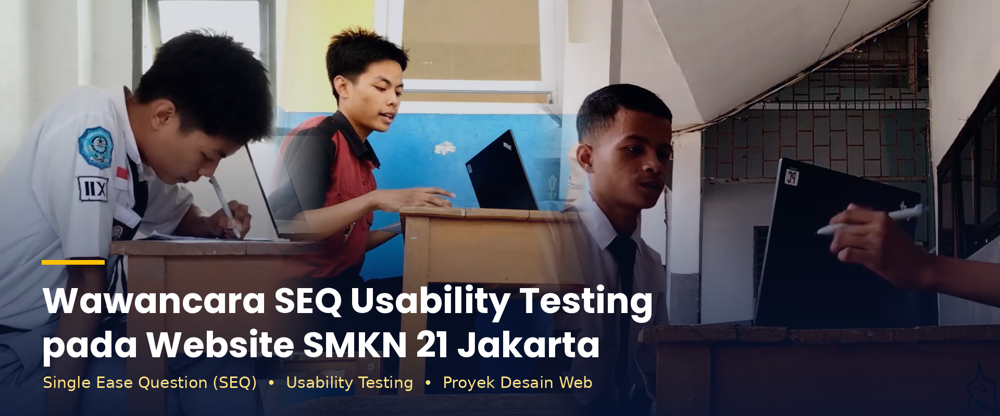
Perhitungan SEQ
Hasil perhitungan skor SEQ dari jawaban pengguna.
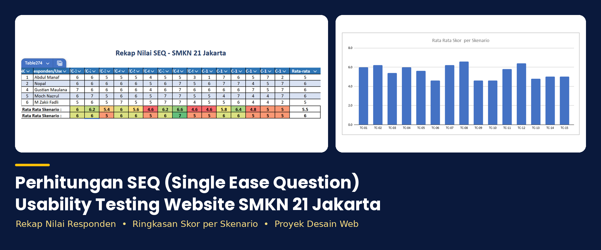
Laporan Pengujian 1
Berisi tujuan, hasil card sorting, hasil SEQ, temuan wawancara, dan daftar perbaikan.
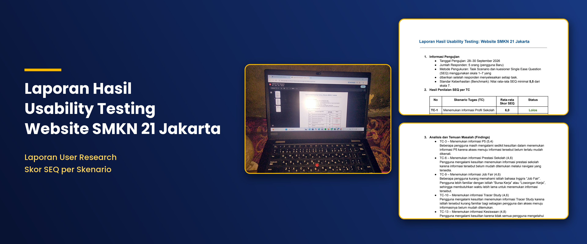
Desain (Mockup, Wireframe, Wireflow, Userflow, Prototype)
Mockup
Mockup adalah tampilan visual desain yang sudah menggunakan warna, tipografi, gambar, dan elemen antarmuka sebenarnya. Mockup pada case study ini merupakan hasil pembuatan ulang (redesign) dari tampilan website asli SMKN 21 Jakarta — saya meniru layout dan gaya visual aslinya, kemudian memperbaikinya berdasarkan temuan pengujian pertama, seperti penataan menu P5 dan Prestasi, penggantian istilah asing ("Job Fair" → "Bursa Kerja", "Tracer Study" → "Data Alumni"), penegasan menu Kesiswaan agar terlihat bisa diklik, serta penambahan tombol "Beranda". Dengan begitu, pengguna tetap mengenali website aslinya, tetapi pengalamannya menjadi lebih mudah.
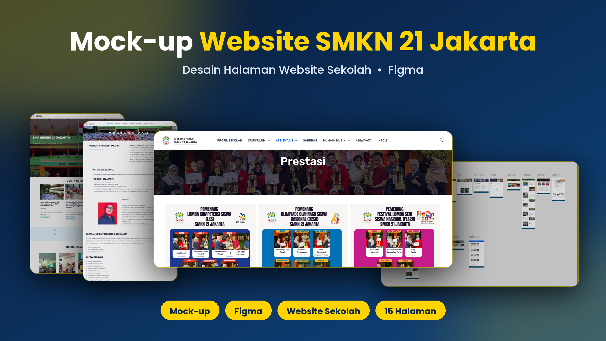
Wireframe
Wireframe yang saya buat adalah kerangka halaman utama website SMKN 21 Jakarta versi perbaikan, yang hanya menampilkan tata letak tanpa warna dan gambar detail. Di dalamnya saya menyusun ulang posisi elemen berdasarkan temuan pengujian pertama: menu Kurikulum (berisi Kurikulum, P5, TEFA), Kesiswaan (berisi Kesiswaan, Ekstrakurikuler, Prestasi, SPMB), dan Hubin/Humas (berisi Bursa Kerja, Data Alumni) ditempatkan pada posisi yang sesuai ekspektasi pengguna. Tombol Beranda juga saya letakkan jelas di navigasi.
Untuk apa wireframe ini saya buat? Untuk memastikan posisi menu, konten, dan navigasi sudah benar sebelum masuk ke desain visual — sehingga saya tidak membuang waktu mewarnai atau memberi gambar pada tata letak yang masih salah. Wireframe ini menjadi acuan saya saat membuat mockup dan prototype.
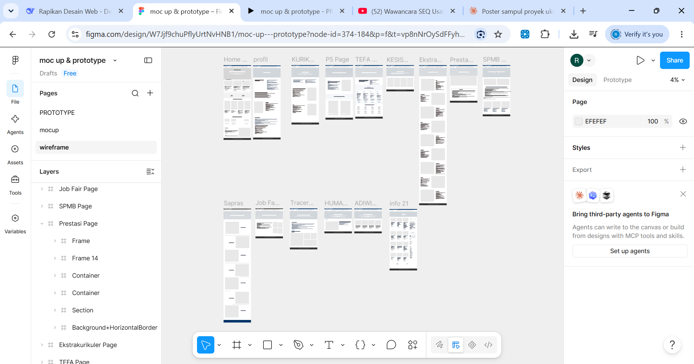
Wireflow
Wireflow yang saya buat adalah gabungan wireframe halaman-halaman hasil perbaikan yang dihubungkan dengan panah alur navigasi. Di dalamnya terlihat bagaimana pengguna berpindah dari Beranda → Kurikulum → P5 → Arsip P5 2024–2025, atau dari Beranda → Kesiswaan → Prestasi, atau dari Beranda → Hubin/Humas → Bursa Kerja.
Untuk apa wireflow ini saya buat? Untuk memeriksa apakah alur navigasi antar halaman sudah logis dan tidak memutar. Misalnya, apakah akses ke P5 benar-benar bisa dicapai dalam dua klik dari Beranda, atau apakah menu Kesiswaan benar-benar mengarah ke halaman Prestasi. Wireflow membantu saya menemukan jalur yang buntu atau tautan yang salah sebelum saya membuat prototype interaktif.
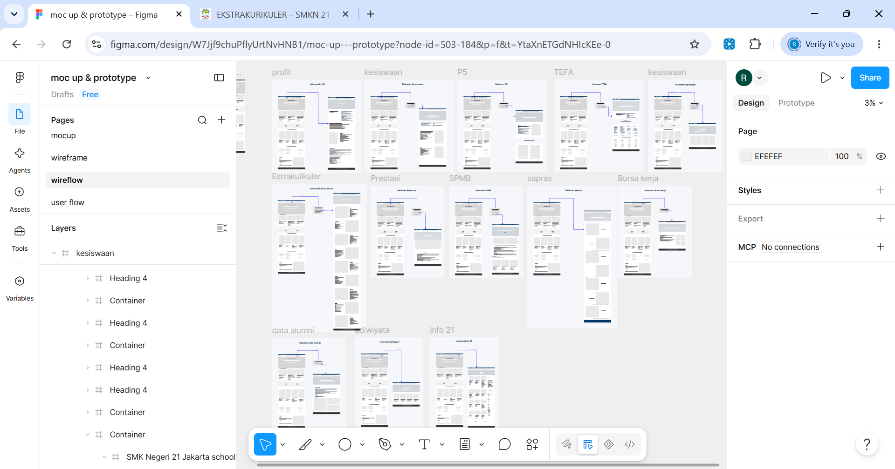
Userflow
Userflow yang saya buat adalah diagram langkah-langkah pengguna dalam menyelesaikan tugas-tugas yang diuji pada pengujian ulang, khususnya tiga tugas yang paling bermasalah di pengujian pertama: mencari informasi P5, mencari Prestasi, dan mencari Bursa Kerja (Job Fair). Setiap userflow dimulai dari titik awal (membuka Beranda) hingga tujuan akhir (menemukan informasi yang dicari), dengan jalur yang sudah disederhanakan sesuai hasil perbaikan.
Untuk apa userflow ini saya buat? Untuk memastikan setiap tugas memiliki jalur yang singkat, jelas, dan sesuai ekspektasi pengguna — bukan jalur yang menurut pembuat website wajar, tapi jalur yang benar-benar ditempuh pengguna. Userflow inilah yang menjadi dasar saya menilai apakah perbaikan (akses P5, penempatan Prestasi, penggantian istilah) benar-benar memudahkan pengguna saat diuji ulang dengan SEQ.
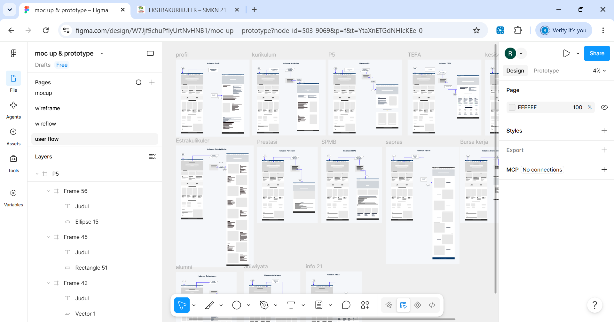
Prototype
Prototype yang saya buat adalah versi interaktif dari seluruh desain hasil perbaikan — menggabungkan wireframe, wireflow, dan userflow menjadi alur yang bisa diklik dan dijelajahi seperti website sungguhan di Figma. Prototype ini bukan meniru tampilan website asli, melainkan hasil desain saya sendiri berdasarkan 7 perbaikan dari pengujian pertama: akses P5 yang jelas, penempatan Prestasi di Kesiswaan, istilah "Bursa Kerja" dan "Data Alumni", menu Kesiswaan yang terlihat bisa diklik, arsip P5 per tahun, dan tombol Beranda.
Untuk apa prototype ini saya buat? Untuk menguji ulang desain secara nyata — peserta pengujian 2 benar-benar mencoba prototype ini, mengisi SEQ (hasilnya naik dari 5,5 ke 6,5), dan diwawancarai. Jadi prototype ini berfungsi sebagai alat verifikasi bahwa 7 perbaikan yang saya rancang benar-benar membantu pengguna, bukan hanya diasumsikan berhasil. Prototype ini juga menjadi acuan final bagi pengembang tentang perilaku website yang diharapkan.
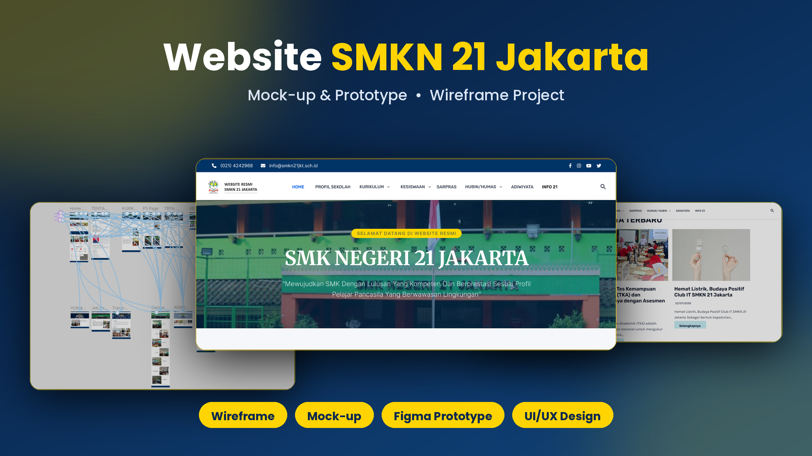
Hubungan Keempat Desain
| Desain | Isi desain saya | Untuk apa |
|---|---|---|
| Wireframe | Kerangka halaman utama dengan menu Kurikulum, Kesiswaan, Hubin/Humas yang sudah ditata ulang | Memastikan posisi elemen benar sebelum diberi warna |
| Wireflow | Kerangka halaman + panah alur (Beranda → P5, Prestasi, Bursa Kerja) | Memastikan hubungan antar halaman logis dan tidak memutar |
| Userflow | Langkah pengguna mencari P5, Prestasi, dan Bursa Kerja dari Beranda hingga tujuan | Memastikan jalur tugas singkat dan sesuai ekspektasi pengguna |
| Prototype | Versi interaktif seluruh perbaikan yang bisa diklik di Figma | Menguji ulang desain secara nyata (SEQ naik 5,5 → 6,5) |
Pengujian Ulang
7 Perbaikan dari Pengujian 1
| No | Temuan | Perbaikan |
|---|---|---|
| 1 | Tugas ke-3 – Informasi P5: Akses menuju informasi P5 kurang jelas. | Membuat akses menuju informasi P5 lebih jelas melalui menu atau submenu yang mudah dikenali. |
| 2 | Tugas ke-6 – Informasi Prestasi: Informasi prestasi sulit ditemukan. | Menempatkan informasi Prestasi pada menu Kesiswaan dengan struktur navigasi yang lebih jelas agar mudah ditemukan. |
| 3 | Tugas ke-9 – Informasi Job Fair: Istilah dalam bahasa Inggris membingungkan pengguna. | Menggunakan istilah "Bursa Kerja" atau "Lowongan Kerja" agar lebih mudah dipahami oleh pengguna yang kurang familiar dengan istilah bahasa Inggris. |
| 4 | Tugas ke-10 – Informasi Tracer Study: Istilah dan akses menuju halaman membingungkan. | Menggunakan istilah yang lebih mudah dipahami, misalnya "Tracer Study (Data Alumni)", serta membuat akses menuju halaman tersebut lebih jelas. |
| 5 | Tugas ke-13 – Informasi Kesiswaan: Menu Kesiswaan tidak terlihat bisa diklik. | Membuat menu utama "Kesiswaan" lebih jelas sebagai bagian yang dapat diklik, misalnya dengan memberikan tanda atau petunjuk bahwa menu tersebut dapat dipilih untuk menuju halaman Kesiswaan. |
| 6 | Tugas ke-14 – P5 Tahun 2024–2025: Pengguna kesulitan mencari informasi P5 dari tahun sebelumnya. | Menambahkan daftar atau arsip berdasarkan tahun sehingga pengguna lebih mudah menemukan informasi P5 dari tahun sebelumnya. |
| 7 | Tugas ke-15 – Kembali ke Beranda: Pengguna hanya bergantung pada logo sekolah untuk kembali ke halaman utama. | Menambahkan tombol atau tulisan "Beranda" yang jelas pada navigasi agar pengguna tidak hanya bergantung pada logo sekolah untuk kembali ke halaman utama. |
Perbandingan Visual: Sebelum vs Sesudah Perbaikan
Berikut perbandingan langsung antara tampilan website asli dan hasil redesign, disusun berdasarkan struktur menu website (navbar + 3 dropdown) serta tampilan halaman beranda secara keseluruhan.
A. Perbandingan Menu (Navbar & Dropdown)
| Bagian Website | Sebelum (Website Asli) | Sesudah (Redesign) |
|---|---|---|
| Navbar / Beranda | 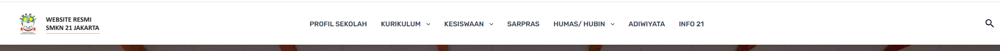 |
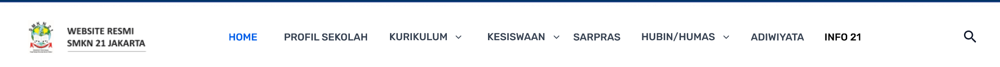 |
| Dropdown KURIKULUM | 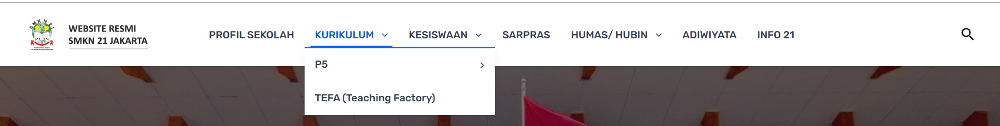 |
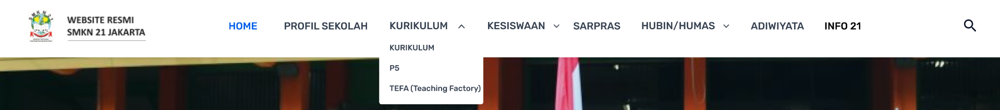 |
| Dropdown KESISWAAN | 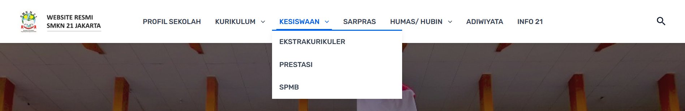 |
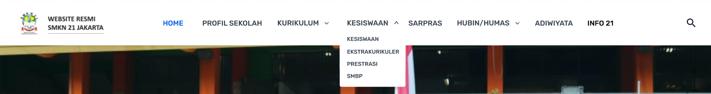 |
| Dropdown HUBIN / HUMAS | 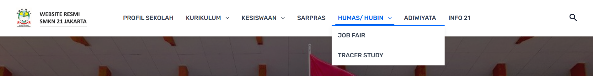 |
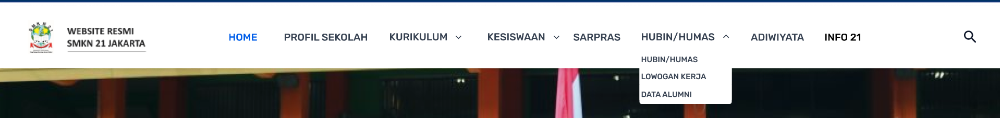 |
B. Perbandingan Desain Halaman (Contoh: Beranda)
Selain menu, berikut perbandingan tampilan visual halaman Beranda secara keseluruhan antara website asli dan hasil redesign (mockup).
| Halaman | Website Asli | Redesign (Mockup) |
|---|---|---|
| Halaman Beranda | 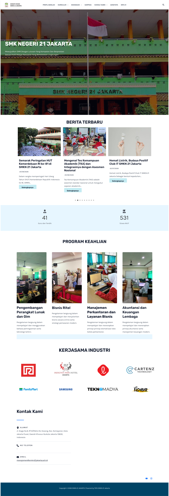 |
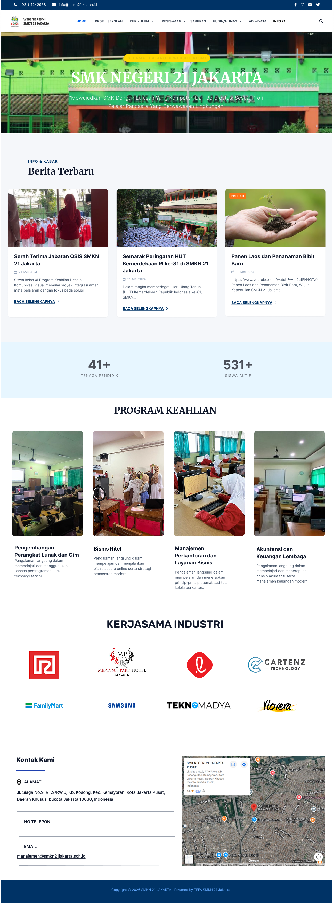 |
Gambar "sebelum" diambil dari screenshot website asli saat pengujian. Gambar "sesudah" diambil dari mockup/prototype Figma hasil perbaikan.
Card Sorting 2 — Susunan Saya
Setelah melihat struktur bawaan website dan hasil wawancara, saya menyusun ulang card sorting sendiri untuk merapikan kategori dan menu.
| Kategori (Susunan Saya) | Kartu / Isi Website | Perubahan dari Website Asli |
|---|---|---|
| KURIKULUM | Kurikulum, P5, TEFA (Teaching Factory) | Struktur lebih rapi dan istilah diperjelas |
| KESISWAAN | Kesiswaan, Ekstrakurikuler, Prestasi, SPMB | Menu Kesiswaan dibuat lebih jelas dan mudah diklik |
| HUBIN / HUMAS | Bursa Kerja, Data Alumni | Istilah "Job Fair" & "Tracer Study" diganti agar lebih mudah dipahami |
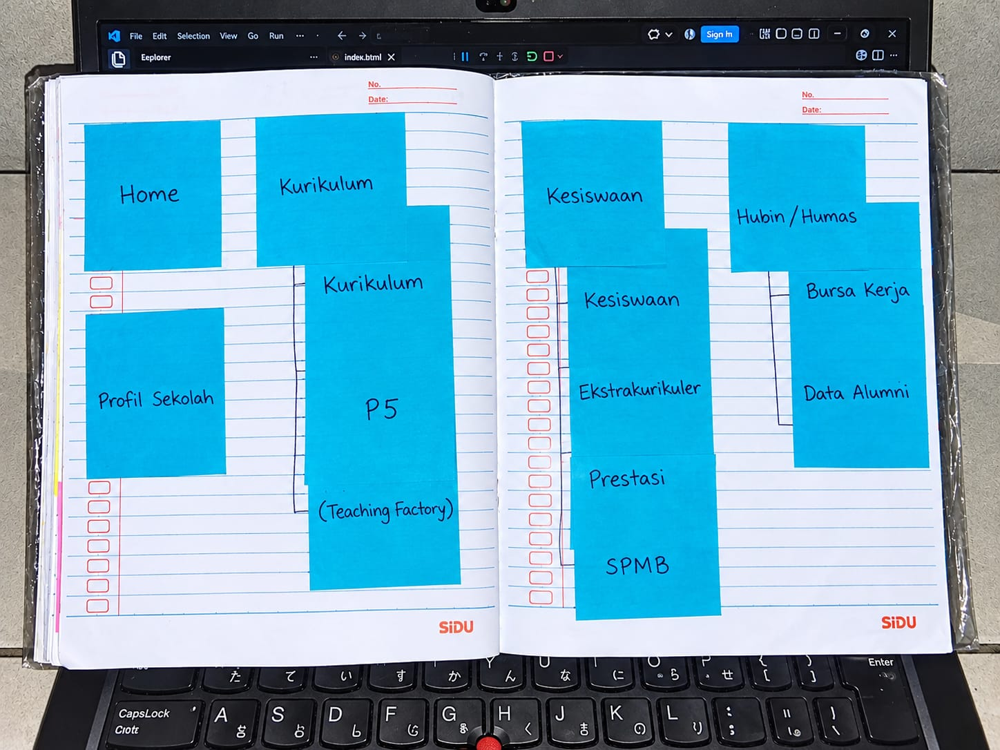
Formulir SEQ 2
Formulir evaluasi SEQ setelah dilakukan perbaikan desain.
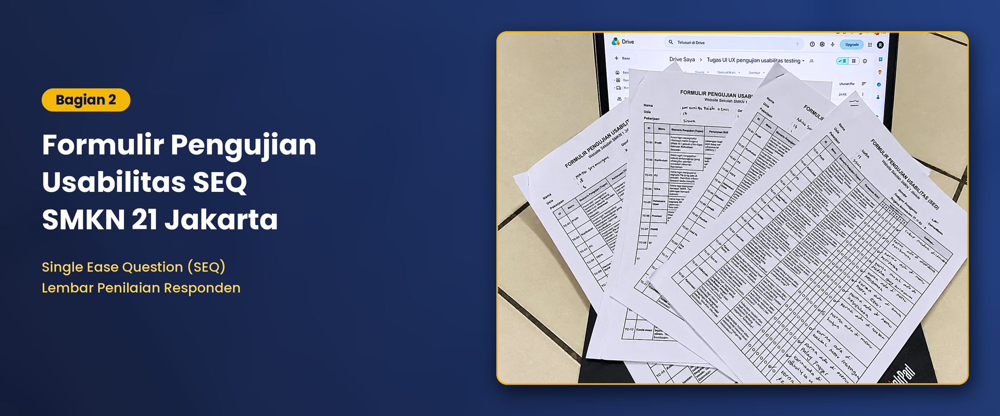
Rekap Nilai SEQ per User (Pengujian 2)
Daftar peserta (Nopal Januar, Ainiya Fadla Azmi, Aditia Surya Saputra, Mesya Sri Mulyani, Abdul Manaf) pada pengujian ulang beserta nilai SEQ setelah desain diperbaiki.
| NO | Responden/User | 1 | 2 | 3 | 4 | 5 | 6 | 7 | 8 | 9 | 10 | 11 | 12 | 13 | 14 | 15 | Rata-rata |
|---|---|---|---|---|---|---|---|---|---|---|---|---|---|---|---|---|---|
| 1 | Nopal Januar J.S | 7 | 6 | 7 | 7 | 7 | 7 | 7 | 7 | 6 | 7 | 7 | 7 | 6 | 6 | 7 | 6,7 |
| 2 | Ainiya Fadla azmi | 7 | 6 | 7 | 6 | 7 | 7 | 7 | 6 | 6 | 7 | 6 | 6 | 7 | 7 | 7 | 6,5 |
| 3 | Aditia Surya Saputra | 7 | 6 | 7 | 7 | 7 | 6 | 7 | 6 | 7 | 7 | 7 | 6 | 7 | 6 | 7 | 6,6 |
| 4 | Mesya sri mulyani | 6 | 6 | 6 | 7 | 6 | 7 | 7 | 7 | 6 | 7 | 6 | 6 | 7 | 7 | 7 | 6,5 |
| 5 | Abdul Manaf | 7 | 6 | 6 | 7 | 6 | 7 | 6 | 7 | 6 | 7 | 6 | 7 | 6 | 7 | 7 | 6,5 |
| Rata-rata Skenario | 6,8 | 6 | 6,8 | 6,8 | 6,4 | 6,8 | 6,6 | 6,8 | 6,4 | 6,4 | 6,8 | 6,6 | 6,4 | 6,6 | 7 | 6,5 |
Rata-rata keseluruhan SEQ Pengujian 2 adalah 6,5 (skala 1–7). Hampir seluruh skenario berada di atas angka 6, menunjukkan bahwa pengguna merasa desain yang baru jauh lebih mudah digunakan dibandingkan website asli.
Wawancara 2
Dokumentasi wawancara dengan pengguna setelah desain diperbaiki.
Ringkasan jawaban peserta pengujian 2:
- Pengguna merasa menu sudah lebih jelas dan mudah ditemukan, terutama akses ke P5 dan Prestasi.
- Istilah "Bursa Kerja" dan "Data Alumni" lebih mudah dipahami dibanding "Job Fair" dan "Tracer Study".
- Tombol "Beranda" memudahkan pengguna kembali ke halaman utama tanpa harus mengklik logo.
- Menu Kesiswaan sekarang terlihat bisa diklik sehingga pengguna tidak ragu membukanya.
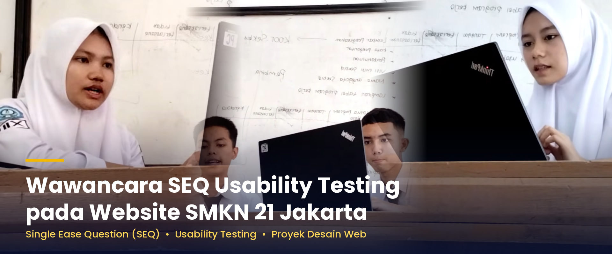
Perhitungan SEQ 2
Hasil perhitungan skor SEQ pengujian kedua.
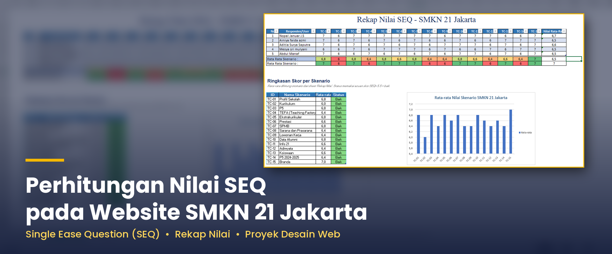
Laporan Pengujian 2
Berisi hasil evaluasi pengujian ulang setelah perbaikan.
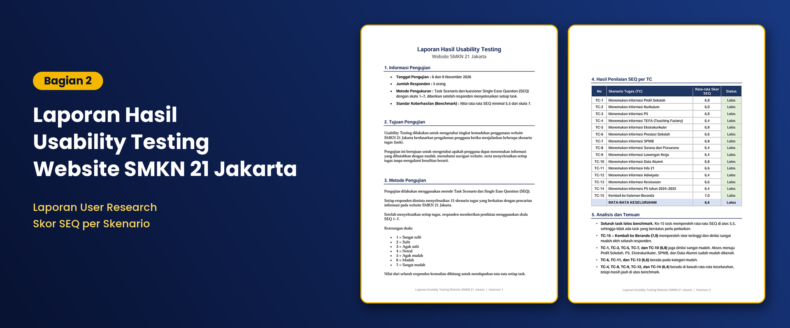
Grafik Perbandingan SEQ per Tugas (P1 vs P2)
Grafik berikut menunjukkan peningkatan skor rata-rata SEQ untuk setiap tugas dari Pengujian 1 (website asli) ke Pengujian 2 (setelah perbaikan). Tugas 3, 6, 9, 10, 13, 14, dan 15 — yang menjadi dasar 7 perbaikan — menunjukkan kenaikan paling signifikan.
Perbandingan Rata-rata SEQ Pengujian 1 vs Pengujian 2
Setelah seluruh perbaikan diterapkan, berikut perbandingan nilai rata-rata SEQ keseluruhan antara pengujian pertama (website asli) dan pengujian ulang (desain hasil perbaikan):
| Aspek | Pengujian 1 (Website Asli) |
Pengujian 2 (Setelah Perbaikan) |
Peningkatan |
|---|---|---|---|
| Rata-rata Keseluruhan SEQ | 5,5 | 6,5 | +1,0 |
Rata-rata keseluruhan SEQ naik dari 5,5 menjadi 6,5 — peningkatan sebesar 1,0 poin pada skala 1–7. Kenaikan ini menunjukkan bahwa seluruh perbaikan (akses P5 yang lebih jelas, penempatan Prestasi, penggantian istilah asing, penegasan menu Kesiswaan, arsip P5 per tahun, dan tombol Beranda) benar-benar membantu pengguna menyelesaikan tugas dengan lebih mudah. Hasil ini juga memenuhi kriteria keberhasilan yang ditetapkan pada bagian Metodologi (rata-rata ≥ 6,0 dan tidak ada tugas < 5,0).
Dokumen
- Website Asli SMKN 21 JakartaBuka
- Laporan Pengujian 1 (Google Drive)Buka
- Laporan Pengujian 2 (Google Drive)Buka
- Formulir SEQ Pengujian 1 (Google Drive)Buka
- Formulir SEQ Pengujian 2 (Google Drive)Buka
- Perhitungan SEQ Pengujian 1 (Google Sheets)Buka
- Perhitungan SEQ Pengujian 2 (Google Sheets)Buka
- Wawancara Pengujian 1 (YouTube)Buka
- Wawancara Pengujian 2 (YouTube)Buka
- Mockup (Figma)Buka
- Wireframe (Figma)Buka
- Wireflow (Figma)Buka
- Userflow (Figma)Buka
- Prototype (Figma)Buka
Yang Saya Pelajari
Dari proses evaluasi usability ini, saya belajar bahwa:
- Desain yang terlihat rapi belum tentu mudah digunakan. Struktur menu yang tampak wajar bagi pembuat website bisa membingungkan pengguna karena ekspektasi mereka berbeda.
- Data pengguna lebih penting daripada asumsi. Hasil card sorting, SEQ, dan wawancara menunjukkan masalah nyata yang tidak terlihat saat hanya mengamati tampilan.
- Istilah sangat memengaruhi kemudahan. Mengganti istilah asing dengan bahasa yang lebih umum ("Bursa Kerja", "Data Alumni") langsung meningkatkan pemahaman pengguna.
- Umpan balik pengguna adalah dasar perbaikan. Tujuh perbaikan yang saya lakukan berasal langsung dari keluhan peserta, dan hasil pengujian ulang menunjukkan peningkatan yang jelas.
- Pengujian ulang penting. Perbaikan perlu diverifikasi, bukan hanya diasumsikan berhasil — SEQ dan wawancara putaran kedua membuktikan perbaikan benar-benar membantu.